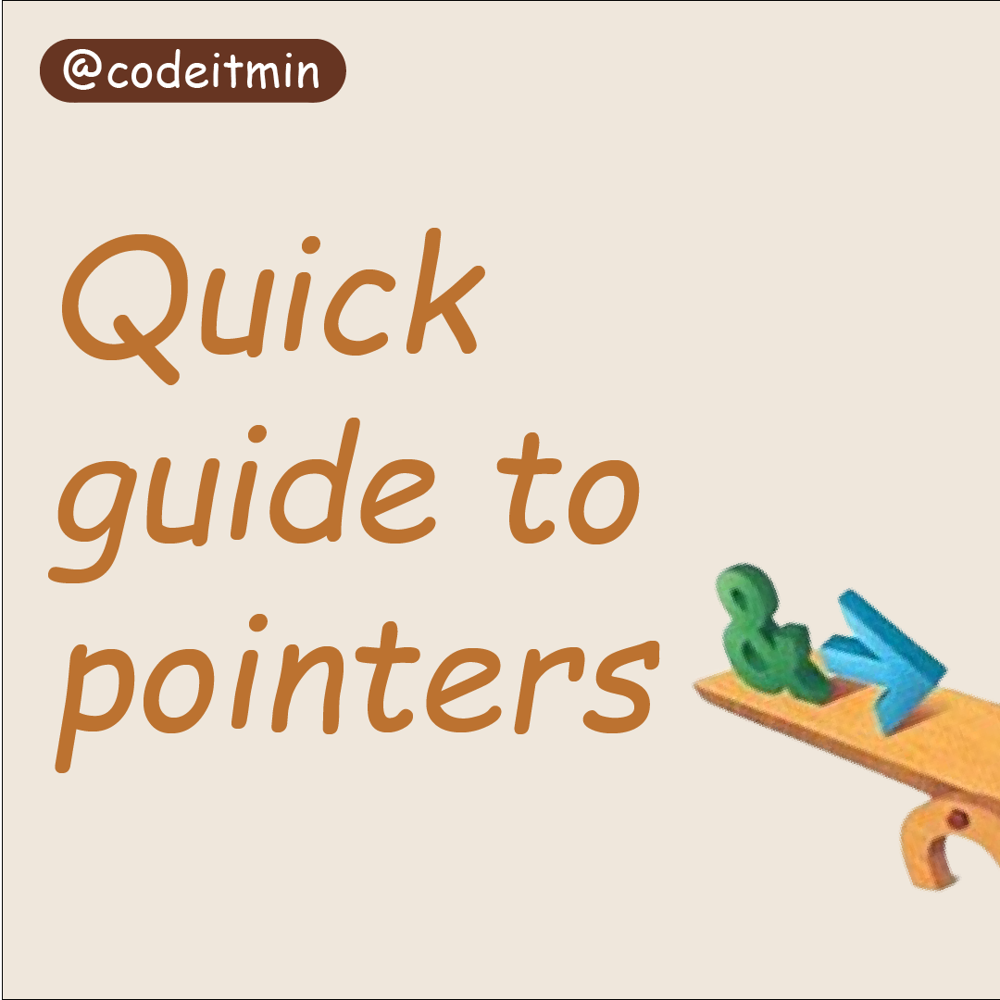

Hello everyone, I am Kashish Ahuja. The topic which I chose for HTML and CSS classwork submission is "Codeitmin".
Codeitmin is my instagram coding account. You can check it on instagram by the username @codeitmin. This website will contain codes, blogs and details related to all the posts.
Meet the programmer
This is Kashish Ahuja. I'm from India, a student of M.Tech (IT), also a chess player and an artist (painting). Finally I'm beginning my developer insta. I'm here to document and share my tech journey. I'm an absolute beginner starting from the basics. I'd post all my work here to creat a place where I can see all my progress and it will be something to look at and be proud of later. And hopefully learn a lot along the way. Wish me luck and let's do it. ✨
Follow me on:
Instagram: @kashish.ahuja_
LinkedIn: kashish-ahuja-1505
GitHub: kashishahuja2002
To-do application using C++
Hey everyone! ✨
I made this basic application to manage to-dos using c++ language.
Maintaining a to-do lists makes you productive, you'll be able to visualise how long tasks were taking, track your weekly and monthly progress and it will give you more time, even for little pleasures.
You can get the code for application on the GitHub link given below.
Link:- to-do application
Star pattern questions
Star pattern programs are one of most famous and frequently asked coding questions.
Pattern questions have been asked in interviews and coding rounds of many MNCs such as ZOHO, Amazon, Voonik, Infosys, Google, IVTL Infoview.
One come across pattern questions with a probability of 1:5, that is 20%.
These type of question are best for practicing flow control statements and to enhance logical thinking capabilities.
You can find some of the top star pattern programs in the GitHub repository shared below.
Link:- Star pattern questions

Pointers
Pointers can be hard to understand at the beginning. But they are a powerful feature of C/C++.
Do you struggle with pointers? Well, everyone does at the beginning.
So here's a quick guide to what are pointers, why are they used, and different types of pointers.
You can learn about pointers in detail from the pdf in the link shared below.
Link:- Pointers